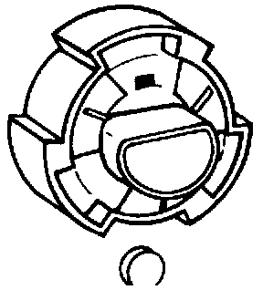

Single Bulb Headlights
NOTE: Check and adjust headlights after performing any work that may affect headlight aim.Removing and Installing Headlight Bulb :
Removing:

- Remove tie-wrap (if installed) from headlight connector.
- Remove headlight connector.
- Twist bulb holder lock ring counter-clockwise approx. 1/4 turn and remove.
- Pull bulb holder from headlight housing and remove bulb from socket.
Installing:
NOTE: Do not touch bulb glass with bare fingers. Skin oil will evaporate when bulb gets hot, dulling reflector and/or damaging bulb.
- Insert new bulb into holder.
- Align lugs on bulb holder with grooves in reflector housing and install holder into housing.
- Install bulb holder lock ring and twist 1/4 turn clockwise to lock.
- Install headlight connector and new tie-wrap.
- Check headlight aim.